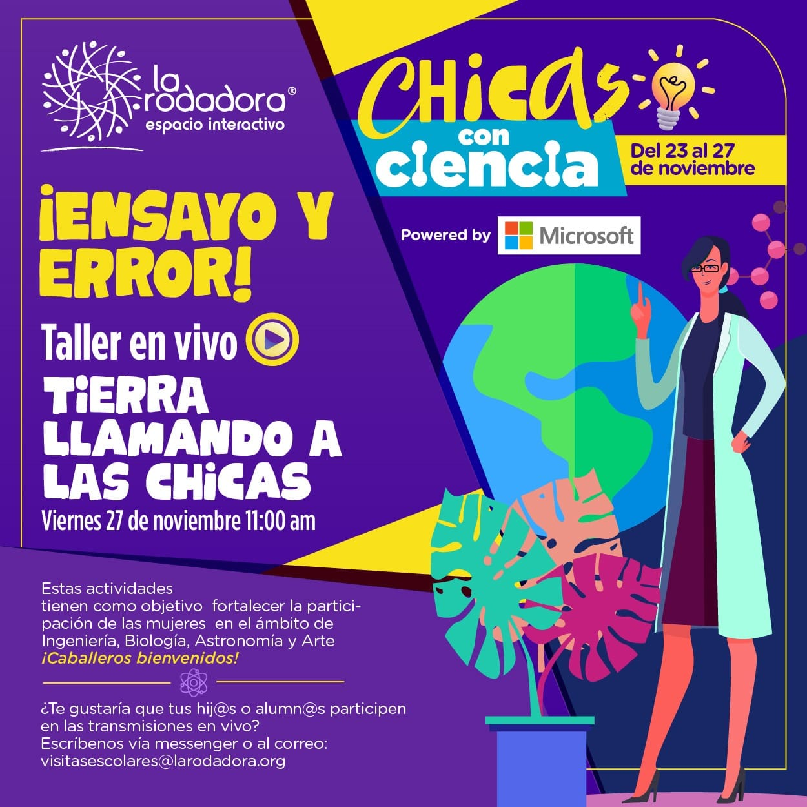

Date: November 2020 | Location: La Rodadora Espacio Interactivo (Online & Ciudad Juárez)
I designed and delivered a live, hands-on STEM workshop to empower girls in engineering, biology, astronomy, and art. In partnership with Microsoft and La Rodadora, I built interactive demos and Q&A sessions to boost female engagement in STEM by 30%.
